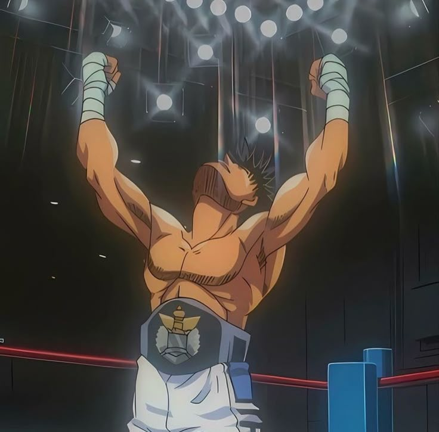

Meu nome é Leonardo Alves, tenho 21 anos e moro em Teofilo Otoni-Minas Gerais.Estou graduando em Sistemas da Informação. Sou apaixonado por tecnologia, sistemas e pelo mundo digital. Gosto de aprender coisas novas, explorar ferramentas e entender como a tecnologia funciona por trás das telas.
Nos meus momentos livres gosto de assistir animes, jogar e assitir campeonatos (principalmente de lol) e conhecer novas tecnologias. Atualmente estou focado em aprender programação e desenvolvimento web, buscando evoluir cada vez mais como desenvolvedor e entusiasta da tecnologia.
| Dia | Manhã | Tarde | Noite |
|---|---|---|---|
| Segunda | Trabalho | Trabalho | Faculdade e descanso |
| Terça | Trabalho | Trabalho | Faculdade e descanso |
| Quarta | Trabalho | Faculdade e descanso | |
| Quinta | Trabalho | Trabalho Faculdade e descanso | |
| Sexta | Trabalho | Trabalho | Estudos e atividades da faculdade | Sabado | Arrumar a casa | Lazer | Filme e descanso |
